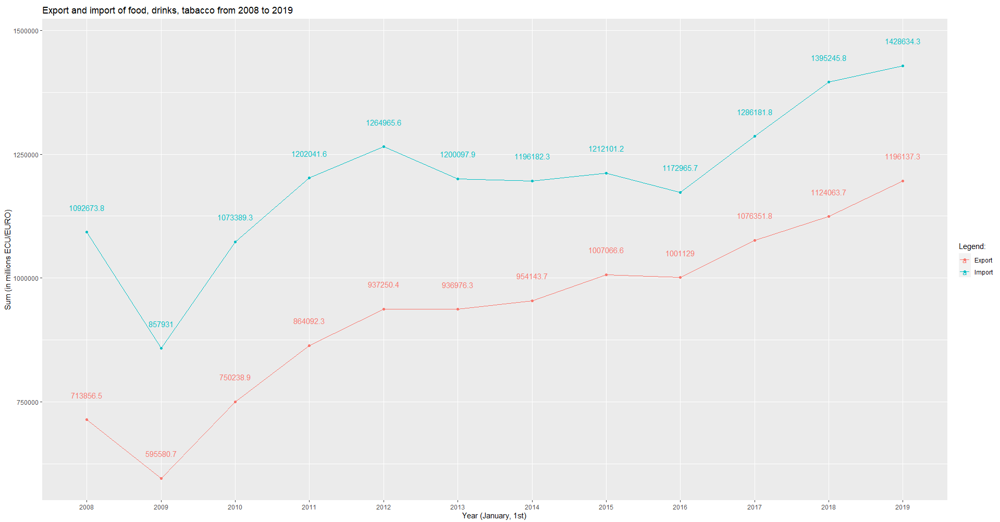
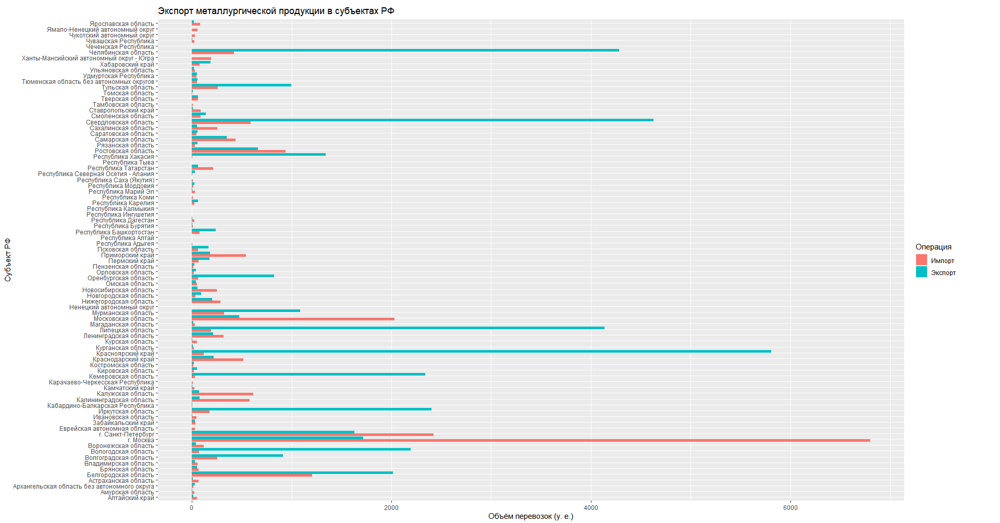
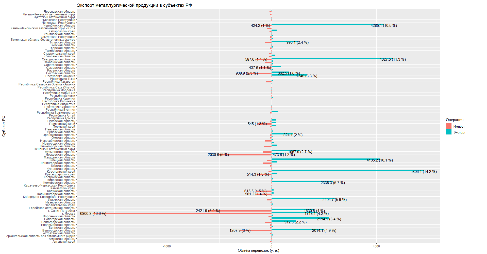

Лабораторная работа № 3. Задания 4, 9
Работу выполнил студент группы 5030102/80401, Приймак Евгений.
Постановка задачи № 4
Имеется файл
trades.RData.
В этом файле содержится переменная
trades,
которая представляет собой список из 6 tibble-объектов, каждый из них содержит информацию о
различных экономических показателях (в частности, экспорт и импорт) в различных странах в различные годы
для соответствующего таблице вида грузов. Необходимо:
-
Сначала по этим 6 таблицам построить две, в одной из которых описывается лишь импорт, а в другой --- экспорт.
-
Затем по полученным двум таблицам для груза "Продукты питания, напитки, табак" необходимо получить суммарные
экспорт и импорт для каждого года; в одном окне построить два графика: для импорта и для экспорта, по одной
оси --- год, по другой --- суммарный объём.
Требования к графикам: оба должны быть нарисованы в виде ломаной, обозначены разным цветом, подписаны; сделать
подписи величин экспорта и импорта, отрегулировать их местоположение и размер, чтобы не перекрывались; по-своему
назвать оси.
Реализация задачи № 4
-
Первую задачу из постановки выполняет функция
get_exp_imp_compound_tables(external_data_path)
Она имеет единственный аргумент, он принимает путь до workspace, в результате работы возвращает список
из двух tibble, в первом из них объединены из всех таблиц данные по экспорту, во втором --- по импорту.
-
Вторую задачу из постановки выполняет функция
plot_food_drinks_tobacco(exp_table, imp_table)
имеет два аргумента:
exp_table,
который принимает таблицу с объединёнными данными по экспорту, и
imp_table,
который принимает таблицу с обединёнными данными по импорту.
Эта функция возвращает график, соответствующий требованиям:

Постановка задачи № 9
Имеется файл
ExpImp.RData .
В этом файле содержится переменная
ExpImp
содержащая tibble с данными по импорту, экспорту различных видов грузов для различных регионов РФ (в частности,
для всех субъектов РФ). Необходимо:
-
Привести таблицу к формату tidydata, т. е. чтобы выполнялись три требования: каждый столбец = некоторая одна
переменная, каждая строка = одно наблюдение, каждая ячейка = значение соответствующей переменной во время
соответствующего наблюдения.
-
Для каждого региона посчитать суммарные экспорт и импорт металлургической промышленности. По полученным данным:
-
Изобразить столбчатую диаграмму, где для каждого региона будут показаны суммарные экспорт, импорт.
-
Изобразить столбчатую диаграмму, где для каждого региона будут показаны суммарные экспорт, импорт,
но столбцы для экспорта и импорта будут расположены по разные стороны от оси.
Требования к диаграммам: экспорт и импорт обозначить разными цветами; во втором случае подписать
значения экспорта, импорта, подписать долю, которую экспорт, импорт в данном регионе составляют от общих
экспорта, импорта по всем регионам.
Реализация задачи № 9
-
Первую задачу выполняет функция
make_tib_tidy(source_tib) .
Входное значение: с помощью функции
get_source_tib()
мы получаем
tibble ,
содержащий входные данные (правда, эта функция оставляет в нём только строки субъектов РФ, поскольку, например,
федеральные округа, являются объединением нескольких субъектов, а значит содержат информацию о сумме по некоторым
субъектам), и передаем этот
tibble
описываемой функции.
Действие: она приводит передаваемое значение к формату tidydata, притом следующим образом:
-
Cначала для каждого вида груза объединяет столбцы импорта, экспорта одного и того же типа груза в один
столбец, именем этого столбца является название груза.
-
Затем с помощью функции
pivot_longer
(пакет
tidyverse )
вместо отдельных стобцов для видов грузов создаёт один столбец, значениями в нём являются эти виды.
-
Затем разделяет столбец с объединёнными импортом, экспортом на два столбца: один --- с импортом,
другой --- с экспортом.
-
Затем с помощью функции
pivot_longer
вместо отдельных столбцов для импорта, экспорта создаётся столбец "Операция", в ячейках которого
находятся значения "Импорт" или "Экспорт".
Возвращаемое значение: исходные данные, преобразованные к формату tidydata.
-
-
Вторую задачу решают функции
plot_graph_1(tidy_tib)
и
plot_graph_2(tidy_tib),
принимающие на вход tidydata и строящие первый и второй графики. Результаты их работы соответственно:

